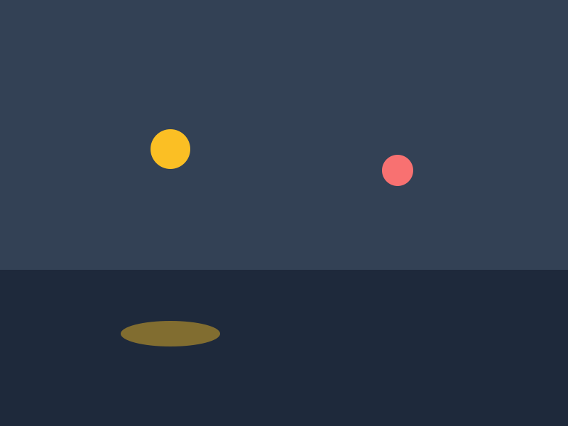
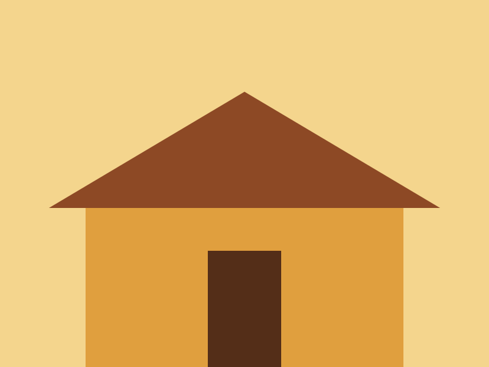
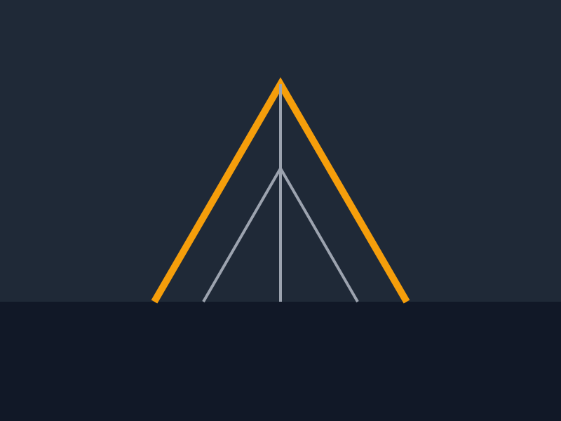

Kiến trúc
↓
Vòm Bê Tông Nắng Sớm
Quận 1, TP. Hồ Chí Minh
Không gian lưu trữ các khung hình chọn lọc theo chủ đề kiến trúc, đường phố, di sản và biển đảo. Nhấn vào từng tác phẩm để xem thông số ống kính và tải bản gốc SVG.
Chọn chủ đề để lọc nhanh hoặc nhấn vào ảnh để mở bảng thông số chi tiết.
Quận 1, TP. Hồ Chí Minh

35mm · f/2.0Hoàn Kiếm, Hà Nội

50mm · f/2.8Hội An, Quảng Nam
Đông Hòa, Phú Yên

28mm · f/5.6Thủ Thiêm, TP. Hồ Chí Minh
Đà Lạt, Lâm Đồng
Kinh Thành Huế
Lý Sơn, Quảng Ngãi
Hình khối bê tông, ánh sáng tự nhiên và kết cấu không gian đô thị.
02 · 02 ẢNHKhoảnh khắc đời thường, quán nhỏ và những ngã tư sau cơn mưa.
03 · 02 ẢNHMái ngói cổ, tường vàng rêu phong và dấu ấn văn hóa truyền thống.
04 · 02 ẢNHĐường chân trời, ngọn hải đăng và bình minh trên những ghềnh đá.
Điền thông tin tác phẩm để ghi nhận vào danh mục đề xuất (biểu mẫu tĩnh GET).
Ánh nắng xiên lúc 7 giờ sáng tạo mảng tương phản hình học trên kết cấu vòm bê tông trần tại trung tâm Sài Gòn.
Mặt đường phản chiếu ánh đèn vàng và sắc xanh trầm mặc sau cơn mưa rào phố cổ.
Những lớp ngói âm dương xếp tầng dưới nắng chiều vàng ấm đặc trưng của khu phố cổ Hội An.
Góc rộng hướng ra đường chân trời nơi đón ánh bình minh đầu tiên trên đất liền.
Đường dây văng đối xứng và nhịp cầu hiện đại phản chiếu xuống mặt sông lúc chạng vạng.
Khung cửa gỗ nhỏ phủ sương sớm trên con dốc yên tĩnh tại Đà Lạt.
Bức tường gạch cổ phủ rêu xanh trầm mặc sau những mùa mưa cố đô.
Vách đá trầm tích núi lửa đón tia nắng vàng đầu ngày bên làn nước trong vắt.